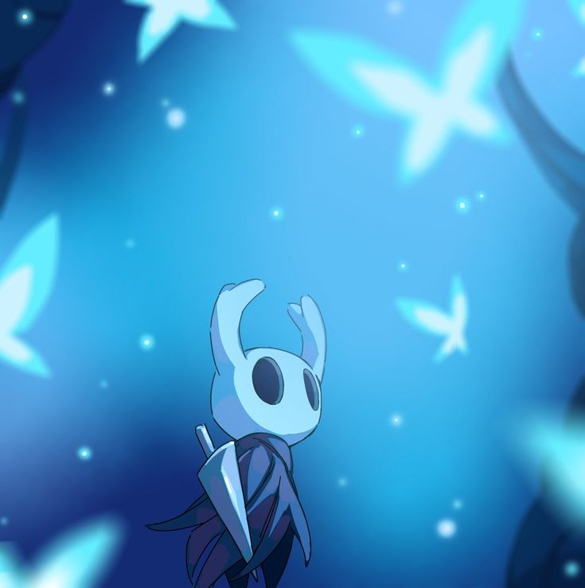
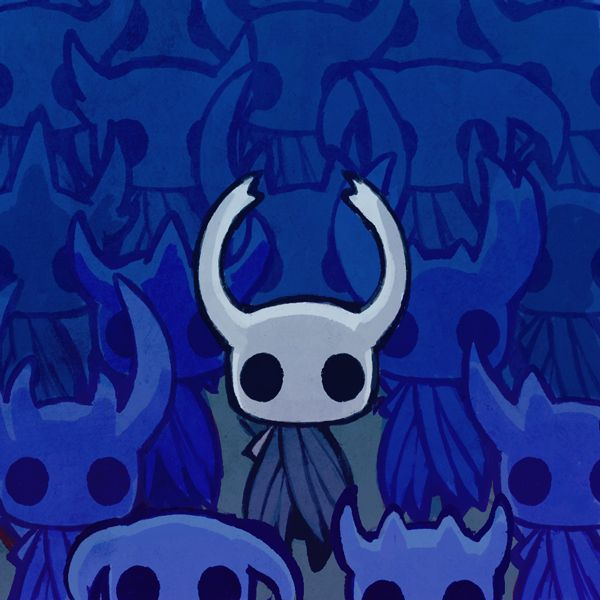
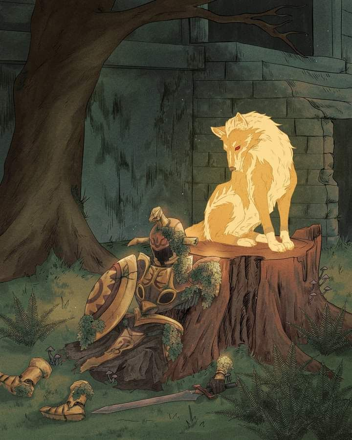

Para mí son representaciones del sentir humano dependiendo del momento y/o situación en la que se encuentre, resultado de las percepciones y sensaciones.
Tú
Dichosa la persona de la que te enamores, eres una fuente de inspiración y emociones, brindas felicidad con cada uno de
tus mensajes, eres en este momento fuente de inspiración para mí, me deslumbras con todo tu ser, soy dichoso de haber podido verte. Dejando de un lado
mi cursilería, eres radiante e increíble para mí, me motivaste a realizar actividades que yo creía ya lejos de mi alcance, dándome fuerza para continuar y
motivándome a mejorar.
Dichosa la persona de la que te enamores, eres una fuente de inspiración y emociones, brindas felicidad con cada uno de tus mensajes, eres en este momento fuente de inspiración para mí, me deslumbras con todo tu ser, soy dichoso de haber podido verte. Dejando de un lado mi cursilería, eres radiante e increíble para mí, me motivaste a realizar actividades que yo creía ya lejos de mi alcance, dándome fuerza para continuar y motivándome a mejorar.
Amar
Una emoción que yo daba por muerta no creí que volviera a surgir, lo lamento si no te he hecho sentir amada, mi falta
experiencia y mi, bueno que sea excusa, pero lo que no es excusa es el amor que tengo hacia ti, recuerdo el primer mensaje que te envié, Roger diciéndome inténtalo yo
tenía tantos nervios jsjs, posible miedo al rechazo también, sin esperar nada te mande un mensaje diciendo Chamoy xD, con el paso del tiempo conocerte fue mi meta
aun no lo hago por completo, pero sé que eres alguien con buen corazón, una amiga con la cual poder hablar, que apoya a quien lo necesita, inteligente, capaz y también alguien sentimental.
Simplemente una palabra no te podría definir. Y si no lo crees te lo diré cada vez que quieras no me cansaría jamás de admirarte.
Una emoción que yo daba por muerta no creí que volviera a surgir, lo lamento si no te he hecho sentir amada, mi falta experiencia y mi, bueno que sea excusa, pero lo que no es excusa es el amor que tengo hacia ti, recuerdo el primer mensaje que te envié, Roger diciéndome inténtalo yo tenía tantos nervios jsjs, posible miedo al rechazo también, sin esperar nada te mande un mensaje diciendo Chamoy xD, con el paso del tiempo conocerte fue mi meta aun no lo hago por completo, pero sé que eres alguien con buen corazón, una amiga con la cual poder hablar, que apoya a quien lo necesita, inteligente, capaz y también alguien sentimental. Simplemente una palabra no te podría definir. Y si no lo crees te lo diré cada vez que quieras no me cansaría jamás de admirarte.
Lo lamento
 Quiero ser suficiente, quizás ese fue el motivo de mi
alejamiento, el no sentirme suficiente y pensar que no soy digno de ser amado que merezco estar solo hasta mi final, pero me he dado cuenta que no es así, tengo personas que me apoyan
amistades con las cuales confiar, personas a las cuales amar, pero ninguna se compara a ti, si tengo que vivir sin amarte no sería vida, puede que no sea el momento correcto o quizás yo no soy el correcto
pero simplemente quiero decirte que eres increíble.
Sin valor, la espada no tiene ningún poder. No olvidéis estas palabras.
-Espiritu del heroe
El Coraje
Muchas veces lo que menos tenemos es valor para afrontar nuestros miedos, aun teniendo la solución en frente si no poseemos ese coraje para realizarlo
fracasamos, importante confiar en lo que estamos haciendo, aun si fallamos podemos volver a levantarnos he inténtalo una vez más.

Quiero ser suficiente, quizás ese fue el motivo de mi alejamiento, el no sentirme suficiente y pensar que no soy digno de ser amado que merezco estar solo hasta mi final, pero me he dado cuenta que no es así, tengo personas que me apoyan amistades con las cuales confiar, personas a las cuales amar, pero ninguna se compara a ti, si tengo que vivir sin amarte no sería vida, puede que no sea el momento correcto o quizás yo no soy el correcto pero simplemente quiero decirte que eres increíble.
-Espiritu del heroe
Muchas veces lo que menos tenemos es valor para afrontar nuestros miedos, aun teniendo la solución en frente si no poseemos ese coraje para realizarlo fracasamos, importante confiar en lo que estamos haciendo, aun si fallamos podemos volver a levantarnos he inténtalo una vez más.